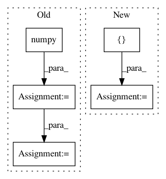

5ffa38fca42bb3fbee030f4b80264e0f4910a49c,torch_geometric/datasets/utils/tu_format.py,,read_adj,#Any#Any#,15
Before Change
new_index = index.new(index.size()).copy_(index)
indicator = read_file(dir, prefix, "graph_indicator").long() - 1
bincount = torch.from_numpy(np.bincount(indicator.numpy()))
index_slice = index.new(bincount.size(0) + 1)
index_slice[0] = 0
curr_graph = indicator[0]
for i in range(index.size(1)):
row = index[0, i]
if indicator[row] > curr_graph:
new_index[:, i:] -= bincount[curr_graph]
curr_graph += 1
index_slice[curr_graph] = i
index_slice[-1] = index.size(1)
index = new_index
After Change
row, col = index
row, perm = row.sort()
col = col[perm]
index = torch.stack([row, col], dim=0)
indicator = read_file(dir, prefix, "graph_indicator").long() - 1
index_slice = index.new(indicator.max() + 2)
index_slice[0] = 0
index_slice[-1] = index.size(1)
curr_graph = indicator[0]
for i in range(index.size(1)):
row = index[0, i]
if indicator[row] > curr_graph:
index[:, index_slice[curr_graph]:i] -= index[:, index_slice[curr_graph]:i].min()
curr_graph += 1
index_slice[curr_graph] = i
index[:, index_slice[curr_graph]:] -= index[:, index_slice[curr_graph]:].min()
return index, index_slice
def read_slice(dir, prefix):
In pattern: SUPERPATTERN
Frequency: 3
Non-data size: 5
Instances
Project Name: rusty1s/pytorch_geometric
Commit Name: 5ffa38fca42bb3fbee030f4b80264e0f4910a49c
Time: 2018-01-16
Author: matthias.fey@tu-dortmund.de
File Name: torch_geometric/datasets/utils/tu_format.py
Class Name:
Method Name: read_adj
Project Name: apache/incubator-tvm
Commit Name: 4c13ae9d17d1709ed7a777ce1bb72212e8d2559d
Time: 2020-12-25
Author: masahi129@gmail.com
File Name: tests/python/frontend/pytorch/test_object_detection.py
Class Name:
Method Name: test_detection_models
Project Name: arraiy/torchgeometry
Commit Name: 50839f8ed95147c71f9f045495ed45380a2ce513
Time: 2019-11-19
Author: priba@cvc.uab.cat
File Name: test/color/test_hls.py
Class Name: TestRgbToHls
Method Name: test_nan_rgb_to_hls